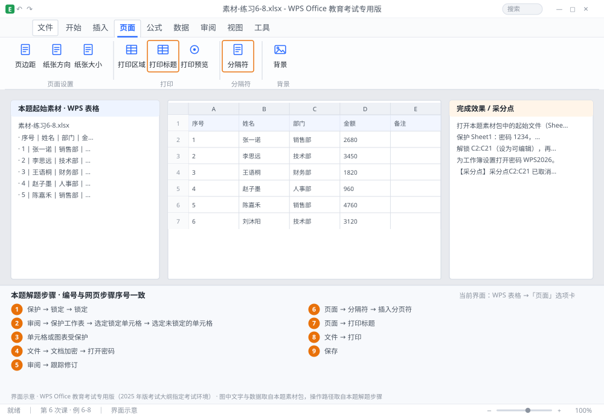

完成比对文档 · 例 6-8
保护与打印：工作表保护 + 工作簿加密 + 跟踪修订 + 分页符 ｜ 第 6 次课 / WPS 表格 ｜ 网页：实操-表格3.html ｜ 考试环境：WPS Office 教育考试专用版（2025 年版考试大纲指定考试环境）
用途 本页按修订后的题目要求与解题步骤生成，是交卷自查的结果基准：
逐项列出每一步应出现的可复核结果，配合模拟操作截图与解题结果文件使用。
它不是素材包的一部分，不会预置答案动作；起始素材仍从本题素材包下载。
一、本题起始素材包
目录：练习素材/练习6-8-保护与打印输出/ ｜
下载包：练习素材/下载/练习6-8-保护与打印输出.zip
二、题目要求
- 打开本题素材包中的起始文件（Sheet1 为录入表，Sheet2 为汇总表）。
- 保护 Sheet1：密码 1234，仅允许「选定锁定单元格」与「选定未锁定的单元格」。
- 解锁 C2:C21（设为可编辑），再重新保护，验证只有该区域能改。
- 为工作簿设置打开密码 WPS2026。
- 在 Sheet1 开启跟踪修订，修改 A2 的内容，确认留下修订记录。
- 在 第 10 行与第 20 行上方各插入一个分页符，设打印标题行为第 1 行。
- 进入打印预览，确认分页位置与每页表头。
- 保存为 学号-姓名-练习6-8.xlsx。
三、解题步骤（编号与下方核对表、截图编号一致）
- 先解锁可编辑区。选中 C2:C21 → Ctrl+1 →「保护」选项卡 → 取消勾选「锁定」→ 确定。默认所有单元格都是「锁定」的，保护后全部不可改。
- 保护工作表。切到 Sheet1 →「审阅」→「保护工作表」→ 勾选「选定锁定单元格」「选定未锁定的单元格」→ 密码 1234 → 确定 → 再输一次。
- 验证。试着在 A2 输入文字 → 应弹出「单元格或图表受保护」；在 C2 输入 → 应可以正常修改。
- 工作簿加密。「文件」→「文档加密」→「打开密码」输入 WPS2026 两次 → 确定 → 保存。
- 跟踪修订。「审阅」→「跟踪修订」（开启后按钮高亮）→ 修改 A2 内容 → 单元格出现批注框与颜色标记。
- 插入分页符。选中 第 10 行的行号 →「页面」→「分隔符」→「插入分页符」；对第 20 行重复。插入后出现蓝色虚线（分页预览视图下为实线）。
- 设打印标题。「页面」→「打印标题」→ 顶端标题行选 $1:$1 → 确定。
- 预览。「文件」→「打印」→ 每一页顶部都应有表头，分页位置在第 9/10 行之间与第 19/20 行之间。
- 保存。Ctrl+S。
四、完成效果 / 采分点
采分点C2:C21 已取消锁定 · Sheet1 已保护且密码为 1234 · 保护后仅 C 列可编辑 · 打开密码为 WPS2026 · 跟踪修订已开启且留下记录 · 第 10/20 行前各有一个分页符 · 顶端标题行为 $1:$1
五、逐项完成核对表
| 步骤 | 关键操作路径 | 应出现的结果（可复核） |
|---|
| 1 | 先解锁可编辑区 | C2:C21、「保护」、「锁定」 |
| 2 | 保护工作表 | 「审阅」、「保护工作表」、「选定锁定单元格」、「选定未锁定的单元格」 |
| 3 | 验证 | A2、「单元格或图表受保护」、C2 |
| 4 | 工作簿加密 | 「文件」、「文档加密」、「打开密码」、PS2026 |
| 5 | 跟踪修订 | 「审阅」、「跟踪修订」、A2 |
| 6 | 插入分页符 | 10 行、「页面」、「分隔符」、「插入分页符」、20 行 |
| 7 | 设打印标题 | 「页面」、「打印标题」 |
| 8 | 预览 | 「文件」、「打印」、10 行、20 行 |
| 9 | 保存 | 保存 |
六、模拟操作截图

界面示意 · WPS Office 教育考试专用版 · 橙色编号与本题解题步骤序号一致；
图中文字与数据取自本题素材包，功能入口取自本题解题步骤。
核对方法：按网页解题步骤完成并另存自己的成稿后，逐行比对本表第 3 列的
参数、公式、区域、文件名与对象数量；再对照网页「完成效果 / 采分点」检查版式是否一致。